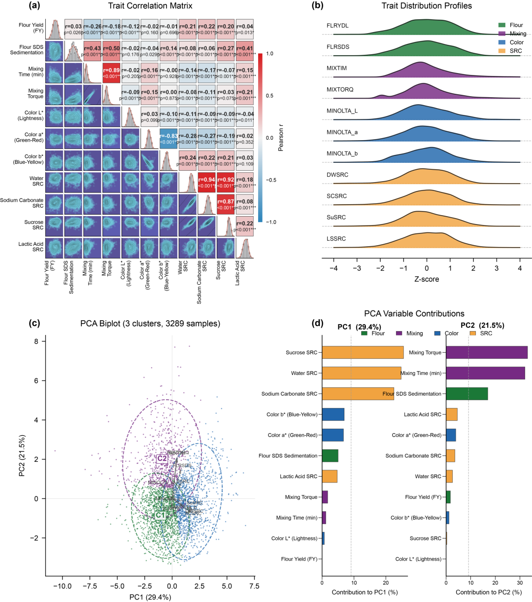
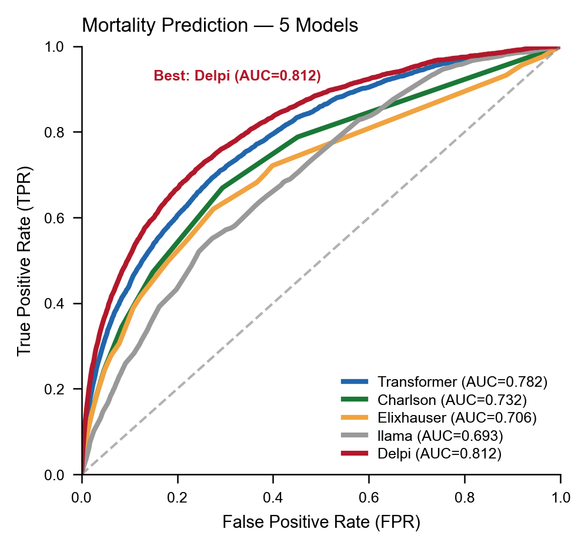
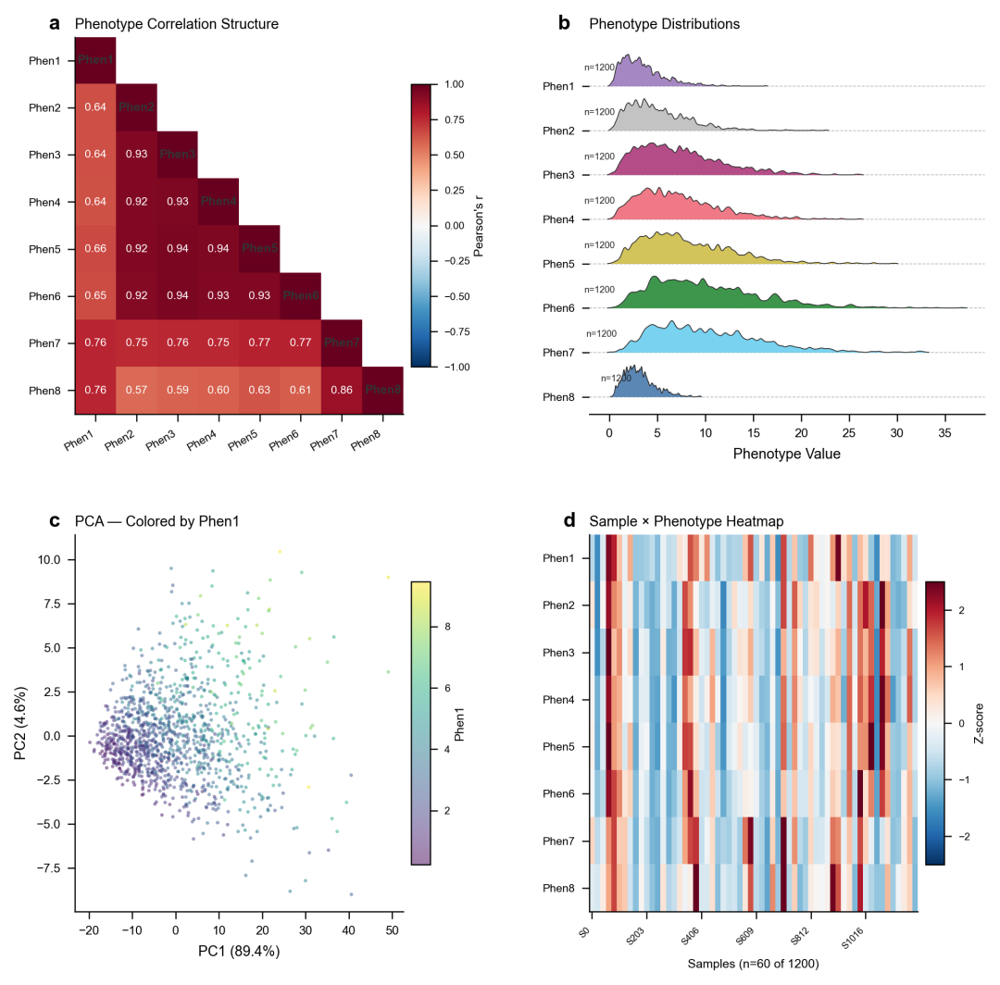
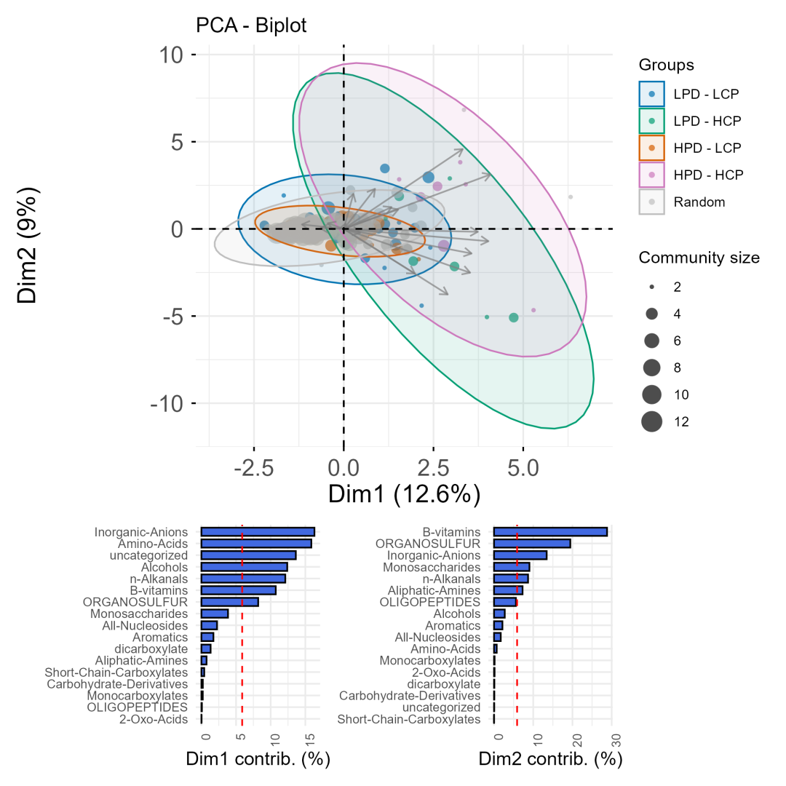

装上这个开源 Skill，AI 画图按 Nature 标准来
查看微信原文 ↗改一张图，能耗一整晚。
配色被导师圈出来，图例压住数据点，导出分辨率不到 300dpi。投稿前被打回的理由，一大半出在图上。
Nature 系期刊还挑字体。Arial 或 Helvetica，字号不能小于 5pt。单栏图宽 89 毫米，双栏 183 毫米。这些数字没几个人背得下来，全是返工时现查的。
GitHub 上有人把它打包好了。名字叫 academic-figure-skill，代码开源。
仓库地址：https://github.com/TingxiYu/academic-figure-skill

图注：项目仓库自带的多面板图鉴，2026 年 11 月截自 GitHub
它是一份给 AI 读的画图说明书。Skill 包里一个 SKILL.md 主文件，挂着 16 份参考文档。字体、栏宽、配色、导出参数，全写死在里面。AI 编程助手装上它，画图就按 Nature、Cell、Science 的标准来。产出三样：矢量 PDF 主文件、300dpi PNG 预览、统计报告。
工作方式一句话能说完：问题驱动，不套模板。你把数据和科学问题丢给它，它反问一句「这份数据要回答什么」，想清楚才动笔。
01它怎么干活
全流程 8 步，每步干一件事。
①先澄清需求：AI 反问这份数据要回答什么。
②判定图型属于哪一类。
③图型论证：一个面板对准一个科学问题。
④探测环境，看看本机底子。
⑤注入风格基线：字体、栏宽、配色、导出参数全部定死。
⑥去资产库里检索现成脚本。
⑦匹配到就原生运行，没匹配就从相近图型继承参数。
⑧过四轮质检。
29 种图型都带生产脚本，Python 和 R 各一份。热图、火山图、PCA、桑基图、山脊图、AUROC 曲线，科研里高频的图基本齐了。匹配到现成脚本就直接跑；没匹配上，就从相近图型继承配色、字号、线宽这三类参数。Python、R 还能混着编排多面板。

图注：仓库图鉴里的 AUROC 曲线，2026 年 11 月截自 GitHub
细节做到什么程度？举两个例子。画火山图前它先验数据，显著差异基因少于 10 个就拒绝渲染。省得交出一张没法看的图。
配色按期刊走。Nature 偏冷蓝，Cell 偏暖，Science 偏保守灰。全部色盲友好，matplotlib 默认色板直接禁用。
画完还有一轮「审稿人模拟」。科学清不清晰、层次清不清楚、配色友不友好，五个角度挨个挑毛病。问题分两级：must-fix 必须改，suggestion 可以商量。
相当于投稿前先被拒一次，总比真被拒强。
02四个平台怎么装
项目本体是个 SKILL.md 技能包，主流 AI 平台都能吃。
共同前提一样：进 GitHub 仓库页面。点右上角 Code 按钮，选 Download ZIP，解压备用。
有一件事得先说。压缩包要整个用——SKILL.md 只是入口。references、scripts、assets 三个目录也得在，缺了就废。只拷一个文件进去，等于装了个壳。
WorkBuddy（界面操作）
入口在左侧边栏，功能名叫「专家·技能·连接器」。切到「技能」页签。点「添加技能」，选「上传技能」，把解压后的文件夹压成 zip 拖进去。导入后自动配置，对话里直接说需求就能用。四个里它最省事。
Trae（界面操作）
进「设置 > 技能与命令」，技能部分点「创建」。先选全局还是项目级，再上传 zip。Trae 会解析文件，自动填好名称和描述，确认即可。想手动装也行。Windows 下放 %userprofile%/.trae-cn/skills。Mac 对应 ~/.trae-cn/skills。
Claude Code（命令行）
它本身是终端工具，按官方 README 的方式装。两行命令：
git clone https://github.com/TingxiYu/academic-figure-skill.git
cp -r academic-figure-skill ~/.claude/skills/
Windows 把它放进 %userprofile%\.claude\skills。装完在会话里描述需求就能触发。比如丢一句「分析 multip-traits.csv，做成 Nature 风格图」。
Codex（命令行）
Codex 也走命令行。做法最简单：整个仓库复制到 ~/.codex/skills/ 里，保持目录结构。references、scripts、assets 三个目录一个不能少。也可以把安装这件事直接丢给 Codex，让它自己从仓库装。官方 README 里附了一段现成的安装指令原文，直接复制发给它就行。
Cursor 和 GitHub Copilot 也有适配文件。Cursor 用 .cursorrules，放项目根目录。Copilot 放 copilot-instructions.md。位置在项目的 .github 目录。复制进去，代码补全就遵循同一套规范。
03谁用得上
贴得最近的是生物、医学、农学、材料这类数据密集学科的研究生。

图注：仓库图鉴里的数据图示例，2026 年 11 月截自 GitHub
论文里成堆的组图、热图、PCA，一张张手调格式太熬人。要投 CNS 系期刊的更直接——内置的就是这几家规范。
第二类是带数据的教学场景。平时的课程作业、组会汇报，加上开题答辩，都用得上。图的规格不必追期刊那么严，配色专业、标注清楚的要求是一样的。
第三类容易被忽略：写技术文档、做数据报告的职场人。它管的不只是「科研」两个字，任何要出正经统计图的场合都能蹭到这套规范。
门槛在哪？你得会用 AI 编程工具，本机装着 Python 或 R。Skill 只负责指挥，真正画图的活是本机解释器干的。
04能省掉什么
手画一张投稿级多面板图，哪些活是纯耗时的？调字体、改栏宽、配颜色、设导出参数、补图注。这些活不涉及任何科学判断，却占掉画图时间的一大半。
这个项目把机械环节交给了 AI——检索现成脚本、注入视觉基线、跑四轮 QA。人只回答一件事：这张图要说明什么。

图注：仓库图鉴里的 PCA 图示例，2026 年 11 月截自 GitHub
统计报告算隐藏福利。每张图强制附带 n 的定义、检验名称、多重比较校正、数据溯源。审稿意见里最常出现的问题项，出图时就备好了。
机械的部分给机器，判断的部分留给人——这笔账才算得过来。
05注意事项
AI 管画，不管统计对错。数据校验门禁能拦住明显不合适的图，AUROC 两条曲线分不开就拒绝渲染。但统计方法选没选对，还得自己把关。
图鉴示例基于项目私有数据生成，官方定位是风格参考。你的数据会被适配性重构，长得像，但不保证逐像素一致。
WorkBuddy 官方文档专门提醒过第三方 Skill 的安全风险。装之前看一眼权限申请和脚本内容。这个项目代码全在仓库里，装前可以翻一翻。
下次导师说「按 Nature 格式重画」，先把数据丢给装了它的 AI。省几轮返工，试一次就知道。
关于本号
专注分享 AI工具实操与AI变现思路。面向想用AI提升效率、探索副业增收，以及希望进阶编程能力的读者，持续输出可落地的教程、经验与资源。关注我，一起用AI放大能力，用代码创造价值。
说明：本文为开源项目介绍与安装指引，功能信息来自项目官方文档，不构成收益承诺；安装第三方 Skill 前请自行核验其来源与脚本内容。
A B O U T
一个只讲能跑通的号
AI · 实操 · 变现
前沿技术分析
工具实测 ｜ 副业变现 ｜ 编程进阶
专注分享 AI 工具实操与 AI 变现思路。
如果你属于下面三种人，这个号值得留着：
01 想用 AI 提升效率，把重复的活交出去
02 想找副业增收的路子，但不知道从哪下手
03 想进阶编程能力，接得住更强的工具
持续输出可落地的教程、经验与资源。
不写趋势空话，只写你今天能照着做完的那一步。
关注我，一起用 AI 放大能力，
用代码创造价值。
每周更新 · 工具实测 / 变现拆解 / 编程笔记
如果这篇对你有用，点个「在看」，让更多需要的人刷到。